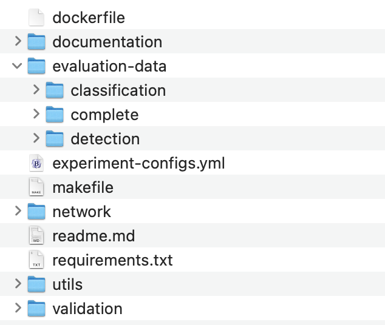

Setting up repository for evaluation
Two major steps are required for setting up the code for evaluation:
1. Download Data
In order to correctly run the scripts for reproducing the evaluation results, the repository needs two things:
-
The latest code from the GitHub repository. The repository can be cloned.
-
The evaluation data zip file which can be found in Downloads section. Due to its large size, the evaluation data could not be uploaded to GitHub.
Upon extraction of the zip file, a folder will be created with the name 'evaluation-data'. This folder needs to be copied as it is to the root of the cloned repository. The name shall also remain the same. The final folder structure must look as shown in image below.

The files for running the evaluation scripts have now been assembled.
2. Setup Enviroment
Since there are multiple dependencies that were used for the development of the application, these dependecies need to be also installed for the evaluation purposes. There are two ways to meet the requirements of running the evaluation.
Using Docker (Recommended)
A dockerfile is supplied with the code that can setup a docker image with all the dependencies of the code met. This is the easiest way to make sure the code works correctly. You will need to have docker installed on your computer already. After that, the following command can be executed to setup the docker image.
docker build -t image_name .
By Installing Packages on Your Own Computer
If you would rather install the packages on your own computer, please run the following command. You will need to have Python and pip installed already.
pip install -r requirements.txt